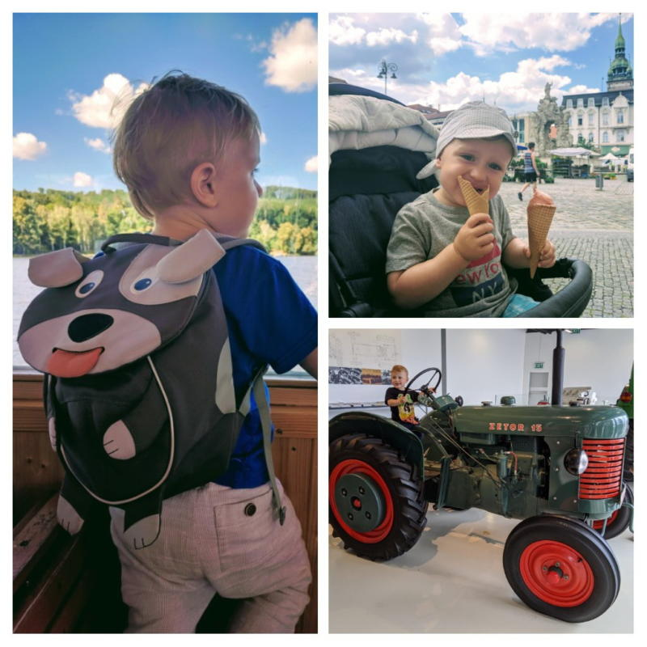
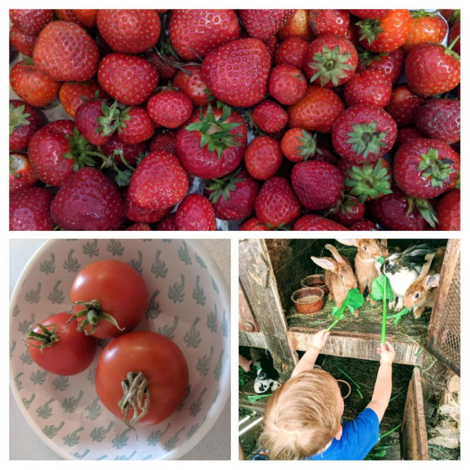
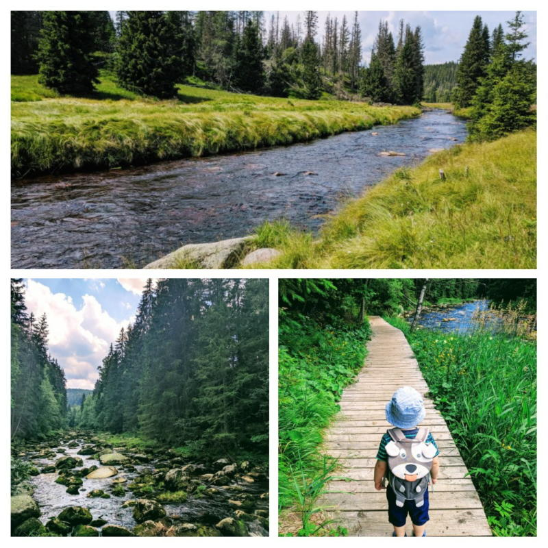
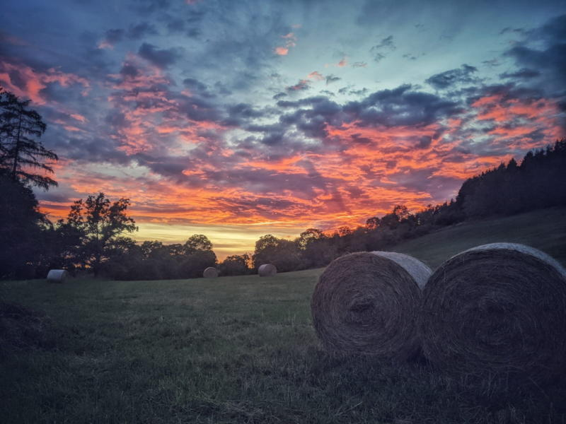

Uteklo jako blázen, ale užili jsme si ho na maximum. Výlety, koupání, zmrzlinky a setkávání… Po jaru v izolaci jsme se snažili využít každý den smysluplně a naplno.
Víkendy se vždycky nesly ve znamení výletů a nových zážitků. Navštívili jsme třeba Zetor Gallery v Líšni, Náměšť nad Oslavou, naučnou stezku v Soběšicích, Sonnentor v Čejkovicích, prošli se Údolím Bílého potoka, nevynechali jsme ani naše oblíbené letní festivaly “Kamenka Open” a “Překročme řeku” a také se s Olim dvakrát svezli historickou mašinkou a jednou parníkem po přehradě. Řada těch zážitků by si i zasloužila samostatný článek, tak třeba se za dlouhých podzimních večerů hecnu O:-)

Návrat k přírodě a ke kořenům :-)… Po letech zase jahodový samosběr ve Slatině, letošní první skromná sklizeň rajčátek na balkoně (O. se mi o ně vzorně staral a zaléval, ale zároveň občas sabotérsky nějaké ještě zelené utrhnul, takže letos jen nějakých trapných 8 kusů 8-). a krmení králíčků u tety na dědině.

Šumava… zlatý hřeb letošního léta a ta nejbáječnější rodinná dovolená se švagrama V., na kterou doteď všichni vzpomínáme. Parádní počasí, baby-friendly zázemí na Baurově dvoře, pohled do zeleně, který se nikdy neokouká, a tlupa pěti neúnavných dětí :D

Když teď koukám ven a za okny jen podzim, sychravo a koronavirus, stejně se musím u těch fotek usmívat. Podmínky už teď budou zcela jistě jiné a nedá se s tím nic dělat, ale kéž by se nám podařilo naplnit i ten podzimní pohár zážitků až po okraj :-)
